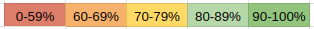

About 'Learning Insights'
'Learning Insights' is an add-on for Google Sheets. This tool is intended to help students and professionals learn any reading-heavy topic.
Purpose
The purpose of this app is to provide a color-coded visualization of strengths and weaknesses in whatever is being learned. Green means you know it, red means you don't, and other shades mean somewhere in between. The visualization is plotted over time so that the student can track their learning progress and choose what to learn accordingly.
This app automates this study technique by creatively combining it with this scheduling technique.
The creators of this free, open source, and experimental app are not associated with the creators of any of the videos mentioned on this website. This app achieves its automation of the original scheduling technique by changing it, and therefore may be less effective if used in its place. This app changes the scheduling technique by basing the background color of a cell on the percentage of questions the user has already marked green in their Q-A sets.
To automate the process described in the study technique video, this tool adds checkboxes which (1) hide answers, and which (2) set the background color of cells.
This app is useful for learning any topic that requires large amounts of reading from which question-answer sets may be obtained. It's useful not just for students, but also for anyone who needs to learn a great of reading material such as programming documentation.
How to Use
Step 1: Watch the Videos That Inspired This App's Creation
Watch enough of the aforementioned videos to understand the key ideas. You don't have to watch them in their entirety if you don't want to, since for most of us, videos aren't usually the ideal way to learn unless the content is optimal for it. So, click through the videos if you have to, but make sure you understand the key ideas. This is the scheduling technique video, and this is the study technique video.
Step 2: Understand How The App Modifies the Scheduling Technique
Now that you understand the key ideas behind both videos, understand that this app combines both video ideas — the percentage of questions that were marked green in a given Q-A set (as per the study technique) are what is used to automatically set the cell color (as per the scheduling technique). The below image shows what color the program uses to chart the day's progress based on the percentage of questions that were marked green:
Additionally, the date is set automatically.
Step 3: Learn About Active Recall, Interleaving, and Spaced Repetition
Active recall, interleaving, and spaced repetition, according to educational psychology research, are evidence-based learning strategies. If you want to know what research demonstrates their efficacy, then sorry, I don't know, because I'm not an educational psychology expert — but I can tell you that both Dr. Ali Abdaal, whose videos I have already linked, as well as Dr. Justin Sung, another former medical doctor now learning coach, would (hopefully!), confirm what I'm saying. I say 'hopefully' because this learning science stuff is quite complicated.
Anyway, speaking of Dr. Sung, I highly recommend you watch both this video of his, which contains a tiered list of effective learning techniques, as well as his part 2 followup video. The fact that the learning strategies are ranked means that, depending on who you are and what your needs are, you don't necessarily have to be familiar with all of them — the power of the videos are that they tell you which techniques Dr. Sung thinks are best and which are worst. If you're like me and aren't trying to become something like a medical doctor, you might benefit from simply skipping to the end and making a mental note of one or two of Dr. Sung's top-ranked choices as well as the lowest-ranked ones.
Active Recall
To put it simply, active recall is when you actively try to remember something. It is also known as the testing effect. A simple example of using active recall would be reading something in a textbook, covering the information so that you can't see it, and then trying to recall the answer from memory.
This app facilitates active recall by providing a platform for question-answer sets.
Interleaving
Interleaving is a study technique in which the student studies multiple topics in a given period of time instead of only studying one. Only studying a single topic in a given period of time is called blocked practice, which the evidence shows is less effective than interleaving. For example, let's say you need to study French, math, and biology. If you were to study French on Monday, math on Tuesday, and biology on Wednesday, that would be blocked practice and therefore inadvisable. Instead, the student should, in the same period of time, interleave the topics — on Monday, learn all three, then learn all three again on Tuesday, etc. Note that interleaving need not only be used for separate subjects entirely, but can also be applied to different subtopics within a subject.
So, what is the optimal interleaved schedule? In a given day, should the student learn topics ABC, or should they study ABCABC? After all, in the scope of a single day, ABCABC would be more interleaved than ABC, despite the fact that ABC in a day is more interleaved than one topic per day. And, ABCABCABC would be more interleaved still. My real answer is, I don't know. But, if I may suggest, the true answer may depend on your available time. If you have as many as six hours to study in a day, you might consider devoting a single hour per topic and adhere to an ABCABC schedule. If you have three, perhaps you could effectively maintain the same interleaved ABCABC schedule in a day by devoting 30 minutes per topic — or, ABC with one hour per topic might be more effective. I really have no idea. I encourage the reader to test different strategies.
This app facilitates interleaving by automatically charting progress for as many topics as have been selected for the day by the student.
Spaced Repetition
Spaced repetition is, to put it simply, the act of spacing review sessions. When we cram, we're not spacing our review sessions, and we just don't learn as well. Now, you might be be a bit confused, because isn't this already taken care of by interleaving, which we just discussed? True! When you interleave topics, you naturally create gaps between successive reviews. These strategies complement each other. For example, if you perform an ABCABC interleaved study strategy in a single day, you naturally space the review for topic A in that day.
That said, this app allows the user to use spaced repetition in the more traditional sense. The traditional spaced repetition sequence is as follows: same day, 1 day, 3 days, 1 week, 2 weeks, 1 month, 3 months, and so on. It's common for software like Anki to time your reviews for you with a spaced repetition algorithm. Those apps are effective for learning facts that can be studied in isolation, e.g. vocabulary drilling. I use Anki myself because it's a great tool. However, this app takes the position that choosing what to review need not necessarily be abstracted away by a spaced repetition algorithm, but may rather be done based on what you yourself know needs to be reviewed. To be clear, using Dr. Abdaal's scheduling technique does not involve planning out, in advance, a spaced repetition review schedule (like setting reminders on your phone to review some topic at day 1, then day 3, then 1 week, and so on). To understand, look at the below image.

As you can see, five topics have been studied. On July 12th, the top three were studied, and then studied again on July 13th, in accordance with the standard spaced repetition sequence. But, the point is, there's data here to help the student choose what topic to review. Perhaps they should review the digestive system first, since the red background color of the cell reveals a knowledge gap. Or maybe there are scheduling conflicts that prevent strict adherence to the traditional spaced repetition sequence.
Regardless, this app prefers a more hands-on approach, encouraging the student to choose what to review based on the current situation rather than what was planned long in advance.
Step 4: Set Up Your Folder in Google Drive
In Google Drive, create a folder; that folder will contain everything the program will need to operate. You can name that folder whatever you want. In that folder, create another folder, and name it 'Q-A Sets' (case sensitive). Exit out of that folder back into the parent folder. There, add a new Google Sheets file. I recommend you name it 'main chart', but you can name it whatever you want.
Step 5: Prepare Your Question-Answer Sets
For a given subject you're learning, create a question-answer set for every subtopic within that subject. These subtopics may correspond to different chapters in a textbook. Each Q-A set should be obtained from a given textbook chapter or internet article. Each Q-A set must be contained in a Google Sheets file. In each Google Sheets file, the questions must be in column A, and the answers must be in column B, as you can see in the image below.
You can see that there are headers in Column A. Each header should correspond to a header in the chapter or article you're studying. The idea is, as you're reading the material, create your questions and answers, organizing them under headers. The program knows to ignore these headers during the formatting process that is detailed in step 6. While creating the answers from the text, try using this method to avoid wasting time.
Place all Q-A set files in the 'Q-A Sets' folder. Make each filename the name of the topic for that set.
LLM-Generate the Q-A Sets or Write Them Yourself?
Personally, I believe that writing the Q-A sets yourself enhances learning, and that is what I strongly recommend.
However, having an LLM generate the questions does save time. You can instruct the model to create a Q-A set from your study material as a CSV (comma-separated values) file with questions in column A and answers in column B. When importing that file into Google Sheets, you should use a custom separator like †, since there will be actual commas in your questions and answers that Google Sheets will erroneously interpret as separators.
Step 6: Format Your Q-A Sets
First, open your 'main chart' file mentioned in step 4. Then, from the 'Learning Insights' menu, select 'Format All Sheets'. It should take somewhere around ten seconds to complete. The program will generate new sheet tabs which will be your Q-A sets that you will use in your studies, as you can see in the below screenshot. Your original Q-A files in Google Drive will be left unchanged in the 'Q-A Sets' folder.
'Format Additional Sheet' is there so that you can add more Q-A sets later — it's needed as an extra menu option because 'Format All Sheets' is a one-time operation.
Step 7: Study Your Q-A Sets To Color-Code Your Progress
Go through your study questions and use active recall to try and remember each answer. Use what you learned from step 1's study technique video to color-code your answers. Remember to use interleaving by studying multiple Q-A sets during your study period.
Step 8: Chart Your Progress
Go to your main chart tab, which you can see below:

Use the checkboxes in column B to select whatever Q-A sets you just studied. Then, From the 'Learning Insights' menu, select 'Chart Progress'. In a few seconds, it should chart your day's progress as per the scheduling technique video mentioned in step 1.
Step 9: Use Your Charted Progress In Upcoming Days
In your upcoming days, refer to the chart generated by 'Chart Progress' to help you decide what to study next, using the dates and colors to guide you in your decision.